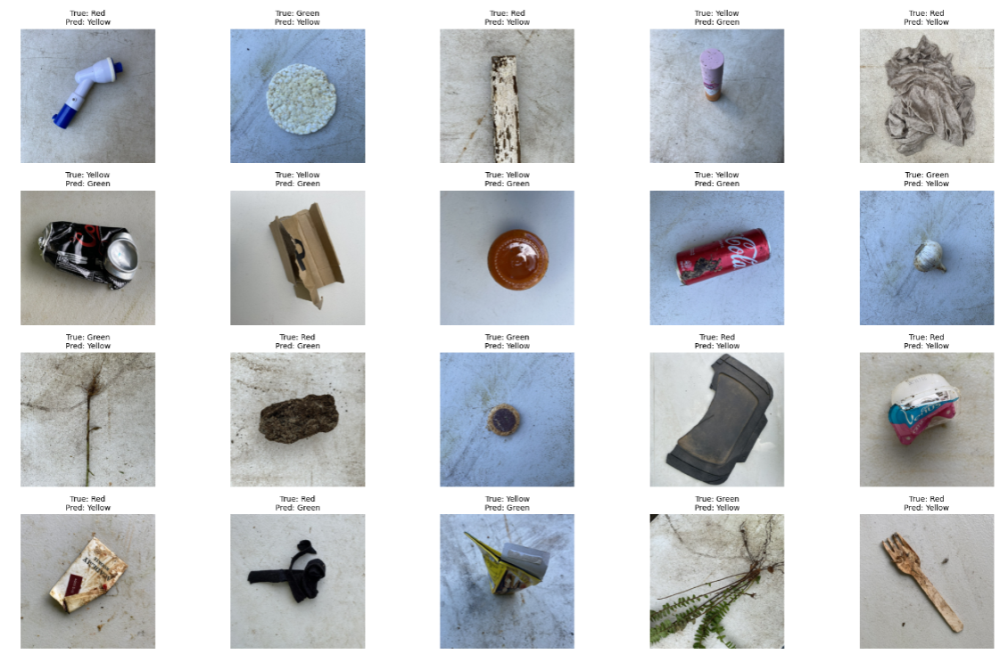
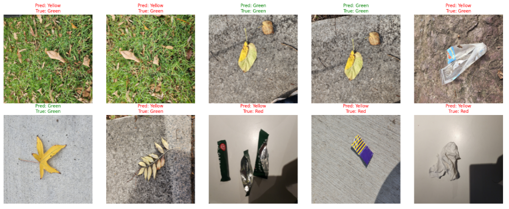

Problem & Dataset
- Task: image to Red (general), Green (organics), or Yellow (recyclables) to help reduce recycling contamination.
- Dataset: RealWaste (Kaggle), remapped from material classes into 3 bin categories.
- Split: roughly 80/10/10 train/val/test after regrouping images into bin folders.

Sample images and distribution from the training dataset.
Approach
- Baseline model: a small CNN (WasteNet) with CrossEntropy, Adam, and 50 epochs, tracking Accuracy, F1, Recall, and Precision.
- Data augmentation: resize, random flips/rotation, colour jitter, and ImageNet-style normalisation applied to the training set only.
- Profiling: compared plain vs. augmented pipelines, found the CPU transforms were the bottleneck, and sped things up with parallel data loading.
- Equal-time study: trained plain and augmented models under the same one-hour budget to compare generalisation.
- Generalisation (D-task): collected a fresh test set from phones and the web, then built an improved CNN with BatchNorm, Dropout, and pooling tuning.
Results
| Setup | Test Acc | F1 | Notes |
|---|---|---|---|
| Baseline (no augmentation) | 69.5% | 0.44 | Reference |
| With augmentation (equal time) | 70.6% | 0.47 | Better recall/F1 |
| Improved (BN/Dropout/Pooling) | 82.98% | 0.71 | On original test set |
| New domain, old model | ~55% | - | Phone/web images |
| New domain, improved model | ~70% | - | Robust, higher F1 |

Baseline (plain) model results on the validation set.
What I Learned
- Balanced recall and F1 matter more than raw accuracy for waste sorting, since missing positives is costly.
- Augmentation helps generalisation but must be profiled and tuned; parallel data loading reduced pipeline time roughly 5-6x.
- Architectural tweaks (BatchNorm, Dropout, Pooling) significantly improved robustness across domains.
PyTorchTorchVisionTensorBoardPyTorch Profilerscikit-learn
"It shows how data and design can work together to make sustainability practical, one correctly sorted bin at a time."